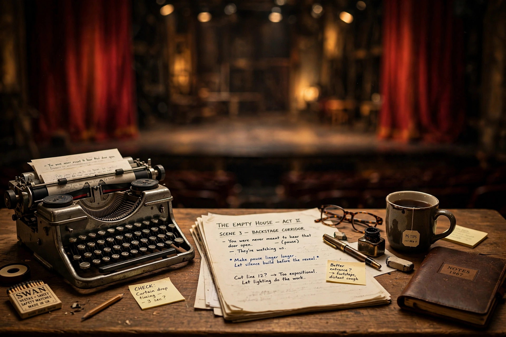

Catherine JohnsonCatherine Johnson (born 14 October 1957) is a British playwright and screenwriter, best known as the book writer of the ABBA jukebox musical Mamma Mia! and the screenwriter of its 2008 film adaptation and the 2018 sequel Mamma Mia! Here We Go Again.
Raised near Wickwar in Gloucestershire, Johnson began writing for Bristol Old Vic, winning a Thames Television writer-in-residence bursary. Her early plays include Rag Doll (1981), Too Much Too Young, Boys Mean Business, Dead Sheep and Shang-a-Lang. She also wrote for television, including episodes of Casualty, Love Hurts and Gold.
Producer Judy Craymer commissioned Johnson to write the book linking ABBA songs into an original story set on a Greek island, about a bride searching for her father's identity. Premiering in London's West End in 1999, the musical became a global phenomenon, and Johnson's film screenplay (2008) was among the highest-grossing musical films of its time.
Other work includes the play Little Baby Nothing and The Best of Men (2012 TV film).